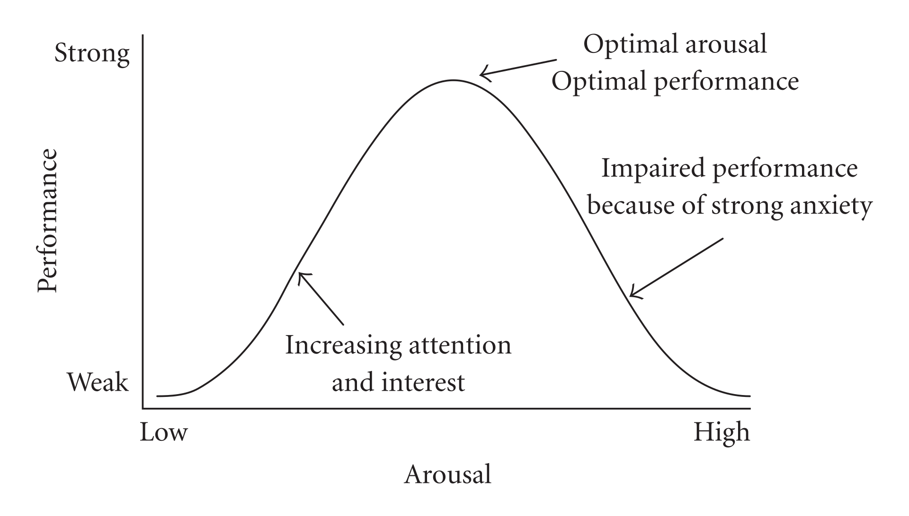

We are now transitioning from exploring who we are (personality) to exploring why we do what we do. Motivation focuses on the varied reasons behind our behaviors and mental processes. Because human behavior is so complex, psychologists have developed several different theories to explain what exactly pushes us into action.
1. Biological and Arousal Theories of Motivation
Some of the most fundamental theories of motivation focus on our biology, physical needs, and desires:
Instinct Theory: Because it is deeply rooted in biology, this is often the starting point for understanding motivation. Instincts are innate, typically fixed patterns of behavior in response to certain stimuli. While many non-human animals are strongly motivated by these instincts, humans actually demonstrate very few rigid, instinctual behaviors.
Drive-Reduction Theory: When a biological need (like hunger or thirst) arises, it creates an uncomfortable internal state or "drive." We are then motivated to act in a way that reduces that drive and restores homeostasis. Homeostasis is the body's natural tendency to maintain a steady, balanced internal state—much like a thermostat regulating the temperature in a house.
Arousal Theory: Once our basic biological needs are met and homeostasis is achieved, we then feel driven to seek stimulation. This theory addresses how people are motivated to seek an optimal level of arousal rather than just physical balance. A key component of this is the Yerkes-Dodson Law, which demonstrates that performance increases with arousal up to an optimal point, after which too much arousal (like extreme anxiety) will decrease performance.

Yerkes-Dodson Law: Notice the inverted U-shape of the curve. Starting on the left, as your arousal (stress or stimulation) increases from a low state, your performance steadily improves because you have increasing attention and interest. At the very peak of the curve is your "sweet spot"—the optimal level of arousal for maximum performance. However, if arousal continues to climb past that peak into the high zone on the right, it turns into strong anxiety, which causes your performance to drop right back down.
2. Intrinsic vs. Extrinsic Motivation
Beyond basic survival, we are motivated by our goals and our environment. Self-determination theory proposes that people are motivated by either intrinsic (internal) or extrinsic (external) motivations.
Intrinsic Motivation: Doing something because you find it personally rewarding or inherently interesting.
Extrinsic Motivation: Doing something to earn a reward or avoid a punishment. Closely related to this is Incentive theory, which specifically explores the role of external rewards in motivating behavior.
3. Sensation Seeking Theory
Because humans aren't entirely bound by simple instincts and basic drive reduction, we are often motivated by the need for novel, varied, and complex experiences. Sensation-seeking theory proposes that an individual's natural drive for these unique experiences is a fundamental motivator. Psychologist Marvin Zuckerman identified four distinct types of sensation seeking:
Thrill and Adventure Seeking: The desire to engage in physically risky or exciting activities. (Example: Skydiving, bungee jumping, or extreme mountain biking.)
Experience Seeking: The pursuit of new sensations through the mind, senses, and non-conforming lifestyles. (Example: Backpacking through a foreign country with no itinerary, trying exotic foods, or exploring unconventional art and music.)
Disinhibition: The drive to seek sensation through social activities, partying, and lowering typical social restraints. (Example: Engaging in wild, impulsive social behaviors, heavy drinking, or acting recklessly at a loud party.)
Boredom Susceptibility: An extreme intolerance for routine, repetitive activities, or predictable people. (Example: Feeling incredibly restless when a class lecture goes on too long, or frequently switching jobs because the daily routine becomes unbearable.)
4. Lewin's Motivational Conflicts Theory
Sometimes, our motivation is paralyzed by having to make a choice. Lewin's motivational conflicts theory proposes that choices create psychological conflicts that one must resolve, forming the basis of motivation. You need to know these three types of conflicts:
Approach-Approach: Choosing between two highly desirable options. Example: Choosing between going to the beach or going to an amusement park.
Avoidance-Avoidance: Choosing between two highly undesirable options. Example: Choosing between doing chores or doing homework.
Approach-Avoidance: Facing a single choice that has both positive and negative consequences. Example: Being offered a great new job that requires moving away from all your friends.
5. Specific Motivators: Eating and Belongingness
Eating is a complex motivated behavior that perfectly demonstrates how physical and mental processes interact. It isn't just about an empty stomach!
Biological Factors: Hormones such as ghrelin and leptin regulate our feelings of hunger and satiety. These hormones are closely monitored and regulated by the hypothalamus via the pituitary gland.
Environmental/External Factors: The behavior of eating is also heavily influenced by external cues like the mere presence of food, the time of day, or social gatherings centered around meals.
6. Don't Trip Up! (Common Misconceptions)
⚠️ Drive-Reduction vs. Arousal Theory: Students often confuse these two biological theories. Remember that Drive-Reduction is about reaching a neutral, balanced state of homeostasis (getting rid of an uncomfortable urge). Arousal theory is about seeking stimulation (riding a roller coaster because you are bored). They pull you in opposite directions!
7. Level Up Your Score: Motivation Mastery
Motivation is filled with distinct, multi-part theories. Make sure you can categorize them properly:
Sort the Motivators: Jump into a round of Connections to categorize biological cues, motivational theories, and Lewin's conflicts.
Find the Fake Conflict: Play Oddball to spot the genuine Lewin's conflicts hidden among tricky distractors.
Master the Mix-Ups: Head to Confusing Pairs to solidify the crucial differences between Intrinsic Motivation and Incentive Theory!